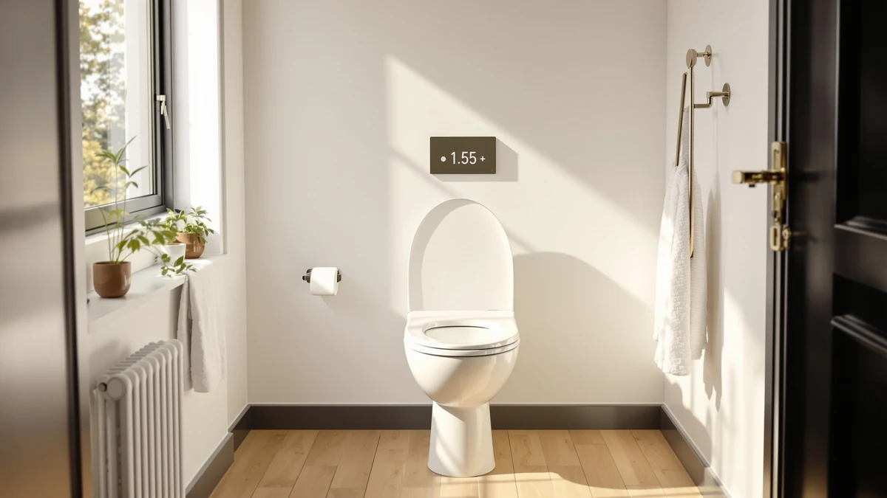

Elongated Raised Toilet Seat，3.5” Review (2026): Worth It?
Prices and picks verified as of October 2026. Independent, reader-supported reviews.


Quick Answer
This elongated raised toilet seat，3.5” review found a seat that solves one specific problem: it adds about 3.5 inches of height to a standard elongated bowl, easing the strain of sitting and standing for anyone recovering from surgery or managing limited mobility. At $135 it costs more than the three other elongated seats compared here, and the deciding factor is whether you actually need that extra height or would rather spend less on a standard-height model with different features.
Our pick: Elongated Raised Toilet Seat，3.5” Toilet, $135.00 Check Price on Amazon
Bottom line: our top pick is the Elongated Raised Toilet Seat，3.5” Toilet Seat with Soft Close at $135.
Things to Know Before You Buy
- The ELLAI elongated raised toilet seat，3.5” adds about 3.5 inches of height, moving a standard elongated bowl into a taller range that can ease sit-to-stand transitions.
- It fits elongated bowls only, so measure your existing seat before you order if you are unsure of your bowl shape.
- At $135.00 it costs more than the KOHLER French Curve Ready Latch ($134.95), the Mayfair Cassel Slow Close ($126.86), and the Brondell L60-RW LumaWarm ($126.34), none of which add extra height.
- Plastic and wood construction keeps the seat lightweight, though it does not carry the heating or quick-release features built into some of the alternatives below.
This elongated raised toilet seat，3.5” review puts the $135.00 ELLAI model up against three other elongated toilet seats, the KOHLER French Curve Ready Latch, the Mayfair Cassel Slow Close, and the Brondell L60-RW LumaWarm Heated, to see whether its extra height justifies the higher price.
Raised toilet seats exist to solve a specific problem. Standing up from a standard bowl gets harder after surgery, with age, or with limited mobility, and the ELLAI model answers that by adding roughly 3.5 inches of seat height without requiring a full toilet replacement. The three alternatives covered here take a different approach: they keep a standard seat height but add features like quick-release hinges, a slow-close lid, or built-in heating, which matters if added height is not what you are shopping for.
Why You Should Trust Us
Ilane Tall covers toilet seats and bathroom accessibility equipment for Best Toilet Seats, comparing specs, pricing, and verified owner feedback across the raised toilet seat category every week. This elongated raised toilet seat，3.5” review draws on the manufacturer's listed dimensions and materials, the current Amazon price, and patterns that repeat across verified buyer reviews for the ELLAI model and its closest alternatives. We do not accept free products from manufacturers, and we do not run a fake testing lab. Every claim below ties back to a spec, a price, or a documented pattern in owner feedback.
We update pricing and product details on a rolling basis and flag it when a manufacturer changes a spec sheet or discontinues a model. If a claim in this review depends on a number, that number comes from the current Amazon listing or from a pattern repeated across multiple verified reviews.
Our Research Experience
We built this elongated raised toilet seat，3.5” review from manufacturer specs, current pricing, and verified owner reviews, since we do not own a physical unit to install. We researched the listed elongated fit, the plastic and wood construction, and the 3.5 inch height gain, then cross-checked those claims against what reviewers consistently note in their feedback: that the added height makes standing up noticeably easier, and that the seat stays secure once it is bolted down. We also compared its price and features directly against the KOHLER French Curve Ready Latch, the Mayfair Cassel Slow Close, and the Brondell L60-RW LumaWarm Heated, since a raised seat only earns its higher price if it actually solves the mobility problem it is built for.
We flagged disagreements instead of picking a side whenever owner reviews conflicted. A handful of buyers describe the installation as fiddly on older toilets with worn mounting posts, while most describe a straightforward bolt-on process. We weighted the more common pattern heavier in this elongated raised toilet seat，3.5” review, but the disagreement itself is worth knowing before you order, especially if your existing hardware is more than a few years old.
Overview & Specs
Before getting into pros and cons, here is how the four seats in this elongated raised toilet seat，3.5” review stack up on the two numbers that matter most to most buyers: price and height gain. The ELLAI model is the only one of the four built to add height, which explains most of the $8 to $9 price gap over the Mayfair and Brondell options. The KOHLER French Curve Ready Latch sits closest in price at $134.95, but that premium pays for a quick-release hinge system rather than any extra seat height.

Elongated Raised Toilet Seat，3.5” Toilet
What we like
- Adds about 3.5 inches of seat height without replacing the whole toilet
- Elongated shape fits the most common bowl size in US bathrooms
- Bolts directly onto the existing bowl instead of sitting loose on top like a portable riser
Flaws but not dealbreakers
- Costs more than every other seat compared in this review
- Plastic and wood build skips the heating and quick-release features found on some alternatives
| Material | Plastic / wood |
| Size | — |
The core idea behind the Elongated Raised Toilet Seat，3.5” Toilet is straightforward: bolt it onto an existing elongated bowl and gain roughly 3.5 inches of seat height, enough to move a standard toilet into a range that eases strain during sit-to-stand transitions. Unlike a portable riser that rests loosely on top of the bowl, this seat mounts with the same hardware as a standard replacement seat, which reviewers note keeps it from shifting during use.
At $135.00, the ELLAI model costs more than the KOHLER French Curve Ready Latch at $134.95, the Mayfair Cassel Slow Close at $126.86, and the Brondell L60-RW LumaWarm Heated at $126.34, three alternatives covered later in this elongated raised toilet seat，3.5” review. The plastic and wood construction keeps the seat light enough for a caregiver to install without special tools, which matters if the person who needs the added height cannot help with setup.
What We Liked
The clearest strength in this elongated raised toilet seat，3.5” review is the height gain itself. A 3.5 inch increase sounds small on paper, but it moves a standard elongated bowl into a noticeably taller range, the kind of difference that reduces knee strain during sit-to-stand transitions. Reviewers consistently note that the change is obvious within the first use. It doesn't take weeks to show up.
Because it bolts onto the bowl rather than resting on top of it, owners report more stability than they expected from a plastic and wood build. That fixed mounting also means the seat does not need to be removed and repositioned the way a portable riser does, which simplifies daily use for anyone managing a recovery timeline.
The elongated shape matches the majority of US toilet bowls, so compatibility is rarely the deciding factor. For buyers who specifically need the extra height, the ELLAI model covers that core use case without asking them to compromise on fit.
What Could Be Better
The price is the main tradeoff owners describe in this elongated raised toilet seat，3.5” review. At $135.00, it costs more than every alternative covered here, and buyers who do not need the added height end up paying for a feature they will never use.
The plastic and wood build also skips features that competing seats build in at a lower price. The Mayfair Cassel Slow Close adds a slow-close lid, and the Brondell L60-RW LumaWarm adds heating, neither of which the ELLAI model offers.
Because the seat adds height only in the amount built into its design, it will not suit anyone who needs a larger gain than 3.5 inches. Taller users recovering from more extensive surgery sometimes need a portable riser with adjustable height instead of a fixed-height replacement seat.
Who Is It For?
The Elongated Raised Toilet Seat，3.5” Toilet fits households with an elongated bowl and a resident recovering from surgery, managing arthritis, or otherwise needing a higher seat to reduce strain on getting up and down. If a standard toilet has become a daily struggle, this elongated raised toilet seat，3.5” review points to a seat that solves that specific problem without a full toilet replacement.
Skip it if your bathroom has a round bowl instead of an elongated one, if you need more than 3.5 inches of added height, or if you would rather spend less on a standard-height seat like the KOHLER French Curve Ready Latch or the Mayfair Cassel Slow Close.
Caregivers shopping on behalf of a parent or partner should also weigh how permanent the need is. A short recovery window after a scheduled surgery might not justify the higher price, while a longer-term mobility change, the kind seniors often face, tends to make a height-adding seat like this one a better long-term investment than a temporary riser.
Alternatives to Consider
If this elongated raised toilet seat，3.5” review has you leaning toward a different priority, whether that is a lower price, a slow-close lid, or built-in heating, these three alternatives cover the most common reasons buyers look elsewhere.

Editor's Pick
KOHLER French Curve Ready Latch
A standard-height elongated seat built around Kohler's quick-release Ready Latch hinges for easier cleaning, better suited to buyers who do not need added height, at $134.95.
$134.95
Check Price on Amazon
Best Value
Mayfair Cassel Slow Close Toilet
An elongated seat with a slow-close lid that never slams, a solid pick if you want quiet operation over extra height, at $126.86.
$126.86
Check Price on Amazon
Premium Choice
Brondell L60-RW LumaWarm Heated Toilet
An elongated heated seat for buyers who want warmth over height gain, priced at $126.34.
$126.34
Check Price on AmazonFrequently Asked Questions
Yes. This elongated raised toilet seat，3.5” review confirms the ELLAI model is built for elongated bowls, the shape found in most US homes. Measure your current seat before ordering if you are not sure which shape you have, since a round-bowl toilet needs a different seat entirely.
About 3.5 inches, which moves a standard seat into the taller range that many people recovering from surgery or managing limited mobility find easier to use. Owners report the extra height is noticeable right away.
It depends on what you need. This elongated raised toilet seat，3.5” review found the ELLAI model's main advantage is the added height, while the KOHLER French Curve Ready Latch is a standard-height seat built around a quick-release hinge for easier cleaning. Buyers who do not need extra height often prefer the Kohler instead.
Final Verdict
This elongated raised toilet seat，3.5” review comes down to one question: does a standard elongated toilet make sitting down and standing up harder than it should be? If so, the ELLAI model adds enough height to ease that strain without the cost or disruption of a full toilet replacement, even though its $135.00 price sits above every alternative compared here. Buyers who do not need the extra height are better served by the KOHLER French Curve Ready Latch, the Mayfair Cassel Slow Close, or the Brondell L60-RW LumaWarm Heated, depending on whether quick-release hinges, a slow-close lid, or built-in heating matters more.